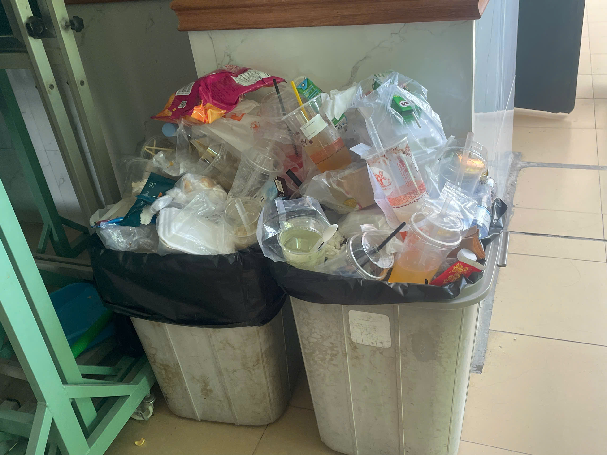

Trong thực tế hiện nay, nhận thức về phân loại rác ở Việt Nam còn chưa cao. Ta có thể dễ dàng nhìn thấy ở nhiều nơi dù đã bố trí đầy đủ các thùng rác phân loại nhưng người dân vẫn chưa có ý thức phân loại rác. Bên cạnh đó, những đơn vị chịu trách nhiệm cũng chưa thật sự quan tâm đến vấn đề này, chưa có hành động xử lý cụ thể đối với những trường hợp vứt rác mà không phân loại.
Nâng cao nhận thức & hướng dẫn phân loại rác tại Việt Nam
Giúp sinh viên và mọi người hiểu và thực hành phân loại rác đúng cách trong cuộc sống hàng ngày từ những kiến thức cơ bản.
Học hỏi mô hình phân loại rác tại Nhật Bản
Cung cấp kiến thức cho sinh viên, du học sinh mong muốn học tập và làm việc tại Nhật về phân loại rác, giúp họ thích nghi với hệ thống phân loại nghiêm ngặt.
Tiếp cận đến mọi người thông qua sáng tạo kết nối liên ngành
Sử dụng công nghệ, video, storytelling và truyền thông để giải quyết vấn đề thực tiễn của ý thức xã hội.